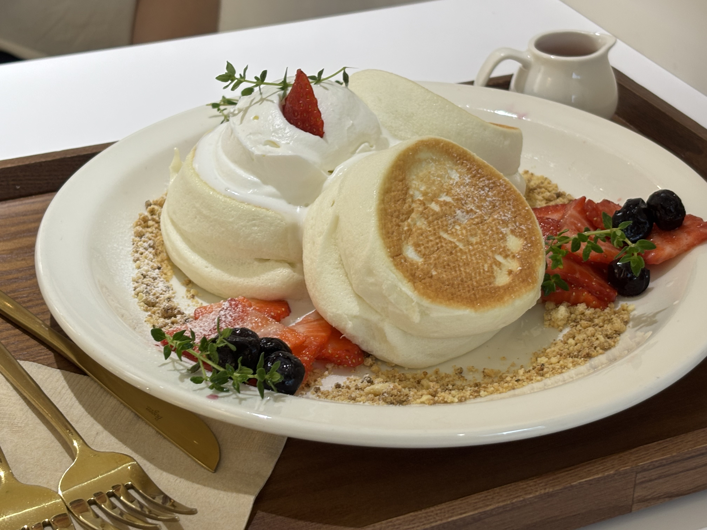
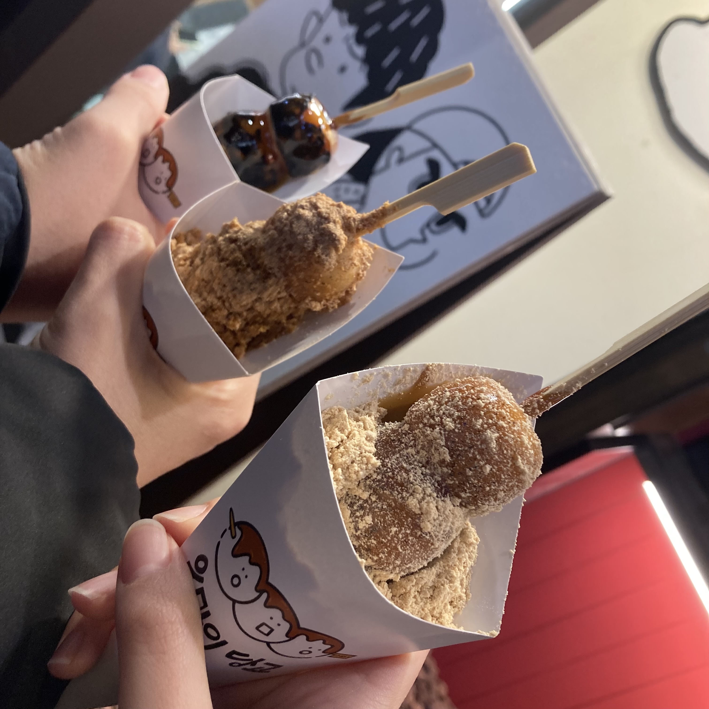

고기 맛집
🍽️지인들에게도 자주 추천하는 엄선된 추천맛집만 선별합니다.
 주력메뉴는 규카츠. 하지만 파스타도 맛있다! 주말에는 웨이팅이 필수이기 때문에 미리 예약 해 두는 것이 다!
주력메뉴는 규카츠. 하지만 파스타도 맛있다! 주말에는 웨이팅이 필수이기 때문에 미리 예약 해 두는 것이 다!
 일본 여행을 가지 않고도 즐길 수 있는 일식 돈까스. 저녁 8시까지만 운영하기 때문에 고민할 시간에 주문을 하는 것이 좋다.
일본 여행을 가지 않고도 즐길 수 있는 일식 돈까스. 저녁 8시까지만 운영하기 때문에 고민할 시간에 주문을 하는 것이 좋다.
디저트 맛집
🍰당 충전 제대로 하려면 바로 여기!
 주력 메뉴는 수플레 팬케이크와 푸딩. 글루텐 프리 옵션이 있어 밀가루 알레르기 있는 사람도 즐길 수 있다!
 주력메뉴는 달짝지근한 미타라시 당고. 주문 즉시 구워 주시기 때문에 따끈하고 쫄깃한 당고를 바로 즐길 수 있다는 것이 강점!